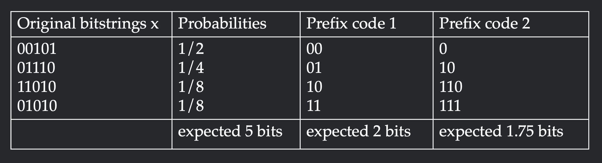

1/22/2025
How do you quantify the amount of information in a distribution? There are two classical attempts from Shannon's information theory and Kolmogorov's algorithmic complexity. In this post, we will connect both perspectives under Algorithmic Information Theory and discuss their merits/pitfalls. The introductory material in this post closely follows exposition from Li and Vitanyi, 2008 and will provide exposition for our treatment of epiplexity (Finzi et al, 2026) in Interestingness Part 2.
Given a probability distribution $P$ over bitstrings $x$, the (Shannon) entropy is defined as
$$H(P) = \Eof{x\sim P}{-\log P(x)}$$
The entropy quantifies the randomness of a distribution via the difficulty of predicting a sample. For example, the lowest cross-entropy error a generative model $Q$ can achieve is the entropy of the ground-truth distribution (cross-entropy $H(P,Q)$ is $\KL{P}{Q} + H(P)$, and KL is non-negative).
Suppose our goal was to compress bitstrings $x$ drawn from $P$ into a unique bitstrings $y=f(x)$. One motivating example is to communicate $x$ across a channel using the least bits in expectation ($\Eof{x\sim P}{|f(x)|}$). For ease of communication, we will ask that $f$ is a prefix code: no codeword $y$ is a prefix of another codeword.
Let's work through the example visualized in Figure 1. Suppose the original distribution has four long bitstrings with probabilities $\frac{1}{2}, \frac{1}{4}, \frac{1}{8}, \frac{1}{8}$. One possible prefix code is to assign a unique two bit identifier to each original string. This will take 2 bits to encode on expectation. To achieve higher compression, we can assign shorter codes to the frequent elements and longer codes to the rarer elements. The second prefix code assigns length $1$ to the most frequent element and length $3$ to the least frequent element. This achieves expected codelength $1.75$, which is an improvement over $2$.

Shannon's source coding theorem states that the expected codelength of any prefix code is lower-bounded by the entropy. Furthermore, it gives a construction for a prefix code $f$ such that the expected codelength is upper-bounded by the entropy plus one (in fact, the compression rate of our example code is precisely the entropy). Specifically, we have
$$H(P) \leq \Eof{x\sim P}{|f(x)|} \leq H(P) + 1$$
Lower bound: We define a distribution $Q_f$ over bitstrings $x$ where the probability of $x$ is inversely proportional to the length of its codeword (one motivation for this distribution is our earlier observation that likelier words should get shorter codes).
$$Q_f(x) = \frac{2^{-|f(x)|}}{Z}\text{ where }Z_f = \sum_{x}2^{-|f(x)|}$$
We will need Kraft's inequality, which states that for any prefix code $f$, $Z_f = \sum_{x}2^{-|f(x)|} \leq 1$. For a simple proof of Kraft's inequality, interpret each bitstring $b_1b_2\ldots b_l$ as the interval with rational endpoints $[0.b_1b_2\ldots b_l, b_1b_2\ldots b_l + 2^{-l})$. Since the code shares no prefixes, all of these intervals must be disjoint. Therefore, their total sum must also be bounded by $1$.
Now that we have Kraft's inequality, we can use the fact that cross-entropy is always greater than entropy (i.e. KL is always nonnegative) to show that expected code length can not beat the expectation of $\log P(x)$
\begin{aligned} H(P) &\leq H(P, Q_f) \\ &= \Eof{x\sim P}{-\log Q_f(x)} \\ &= \Eof{x\sim P}{|f(x)|} + \Eof{x\sim P}{\log Z} \\ &\leq \Eof{x\sim P}{|f(x)|} && \text{[$Z \leq 1$]}\\ \end{aligned}
This completes the lower bound.
Upper bound: Kraft's inequality comes with a constructive analogue: if one chooses codelengths $l_i$ that satisfy $2^{-l_i} \leq 1$, then there is an algorithm that constructs a valid prefix code. Therefore, we can take the codelengths $l_i = \lceil-\log P(x)\rceil$ since this satisfies Kraft's inequality and has expectation bounded above by $H(P)+1$. Note that this choice intuitively coincides with our earlier lower bound where we interpret $2^{-|f(x)|}$ as the probability of an element. If we did not want to appeal to Kraft's inequality, we could directly use Shannon-Fano coding to achieve the upper bound (proof left to the article).
For setup, Turing machines accept valid programs $h$ as bitstrings and output bitstrings $x$ if they halt. Prefix-free Turing machines have a prefix-free domain (no valid program is a prefix of another) and universal Turing machines can simulate any other Turing machine given its description as an input. The Kolmogorov complexity of a string $K(x)$ is the length of the shortest program under a fixed universal prefix-free Turing machine $U$ that produces $x$, or
$$K(x) = \min\{|h| : U(h) = x\}$$
One might be concerned that the specific implementation of the universal Turing machine $U$ may affect the Kolmogorov complexity. Interestingly, choosing between universal Turing machines $T_1$ and $T_2$ only affects the Kolmogorov complexity up to a constant that depends on $T_1, T_2$. This is because universality allows us to simulate $T_1$ within $T_2$. Therefore, if there was a substantially shorter program in $T_1$, one could simulate it in $T_2$ given a description of $T_1$. For a more concrete example, if there was an exceedingly short program in C++, we could first write a C++ interpreter in Python before specifying the C++ program. Going forward, we will always operate under an arbitrary such Turing machine $U$.
We can also encode more complicated objects like probability distributions under programs. We say a program has encoded a probability distribution if it can implement the following two primitives:
The Kolmogorov complexity of a distribution $K(P)$ is then the shortest program that implements both such primitives. For example, the uniform distribution has $K(P) = O(1)$: evaluation is implemented by a program that counts the length of $x$ and sampling is implemented by a program that copies the bits from the tape of uniform bits.
In this section, we show that compressing each sample algorithmically gets near optimal compression for every distribution, which can be treated as an algorithmic analogue to Shannon's source coding theorem. In this sense, the Kolmogorov complexity at the sample level contains the "randomness" of a string without making any reference to a probability distribution. More formally, for distribution $P$, we have that
$$H(P) \leq \Eof{x\sim P}{K(x)} \leq H(P) + K(P) + O(1)$$
Lower bound: The lower bound is a simple consequence of Shannon's source coding theorem: if we could associate a program $h$ to each $x$ under the prefix-free TM, then it would form a prefix code for $P$, which must have expected code length lower-bounded by entropy.
Upper bound: For the lower bound, we will prove a lemma that proves the statement at a sample level for all distributions $P$
$$K(x) \leq K(P) - \log P(x) + O(1)$$
To show this upper bound, it suffices to provide an encoding of $x$ using an RHS number of bits. At a high level, we will encode as a sample from $P$ using the optimal prefix code. This proceeds in three parts.
Since the above is a valid program that generates $x$, it serves as an upper bound for the complexity of $K(x)$ for all choices of $P$. Simply taking the expectation over $P$ proves the upper bound of the theorem.
Overall, the theorem states that even if we compress strings at a sample level using Kolmogorov complexity, we can achieve near optimal compression for any distribution $P$ by paying a price of $K(P)$ extra bits. Therefore, we can consider Kolmogorov complexity a "univeral compressor". The distribution induced by $K(x)$ is called the "universal distribution" and has a billion wonderful properties we won't discuss here.
Though we have quantified the information content in a sample via the difficulty of compression, we note that our notion of complexity does not align with our intuitions of "structure". For example, we believe that the uniform distribution does not exhibit significantly interesting structure (as evidenced by low $K(P)$). However, the distribution has high entropy and thus the majority of samples have high Kolmogorov complexity. Therefore, our current notions do not capture structure at a sample level.
It is enticing to ask whether we can quantify the structure of a sample. A long line of work is well summarized in the coffee automaton paper (Aaronson et al, 2014) which draws inspiration from the complexity of coffee and cream in a cup. When coffee and cream are fully mixed or fully separate, there is low structure. But when coffee and cream are in the process of mixing, there is high structure. The most representative attempts of quantifying complexity are (coarsened) (naive) sophistication and logical depth. In Appendix A, we detail these metrics and show how they are both equivalent and deficient at quantifying complexity at the sample level. As a sneak peek, Part 2 will show how epiplexity finds it more satisfying to quantify complexity (1) at the distribution level (2) under time constraints.
Hopefully the above posts offers a simple introduction to quantifying information content through compression (of samples or distributions). However, such notions still feel inadequate: pseudo-random number generators should intuitively have high random information, and math should intuitively have high structural information, but our current notions would give low structural and random information to both. In Part 2, we will show how epiplexity (Finzi et al, 2026) can potentially resolve such concerns with distributional complexity and compute constraints. Thank you for reading, and feel free to reach out with any questions or thoughts!
To separate the random information from the structural information within a string, naive sophistication aims to quantify the complexity of defining a typical set. For a sample $x$, a typical set $S$ satisifies $K(x \given S) \geq \log |S| - c$ (the shortest description of $x$ is as a random element of $S$ up t a constant threshold $c$). Naive c-sophistication ($\text{nsoph}_c(x)$) is the minimum of $K(S)$ over all typical sets for $x$. To remove the sensitivity to $c$, we can take coarsened naive c-sophistication as $\text{cnsoph}_c(x) = \min_c \{c + \text{nsoph}_c(x)\}$. The naive sophistication is at worst $K(x) + O(1)$ which can is witnessed by $S = \{x\}$. We have already shown that most strings have high Kolmogorov complexity; such strings are low sophistication because we can take $S$ to be the set of all bit strings.
Naive sophistication actually comes from the more classical notion of sophistication ($\text{soph}_c(x)$) which adds the additional constraint that $S$ must give a near-optimal encoding of $x$, or $K(S) + \log_2|S| - c \leq K(x)$. We refer to this as a two-part code since we are encoding $x$ via $S$, and in the next section we will see a distribution level two-part code. Since $K(x) \leq K(x\given S) + K(S)$, the optimality of the two-part code $S$ implies that $S$ is a typical set. Interestingly, sophistication and naive sophistication (coarse or not coarse) are known to be quite close (Vereschchagin and Vitanyi, 2004, Mota et al, 2013).
$$\text{nsoph}_{c}(x) \leq \text{soph}_{c+O(\log n)}(x) \leq \text{nsoph}_{c}(x)$$ $$\text{ncsoph}(x) \leq \text{csoph}(x) \leq \text{ncsoph}(x) + O(\log n)$$
Knowing that all these metrics are equivalent, does naive sophistication capture what we're looking for? Unfortunately, it is quite a sad story. The only existence proof of sophisticated strings uses a non-constructive diagonalization argument. Even optimizing for sophistication seems like a lost hope since it is bi-level over $x$ and $S$. The situation is even more dire because Chaitin's incompleteness theorem states that it is impossible to provide a proof that any given string over a length $L$ is sophisticated. We face much less resistance when defining such notions distributionally.
Logical depth can also be shown to be quite close to sophistication. TODO FULL DEFNS and PROOF